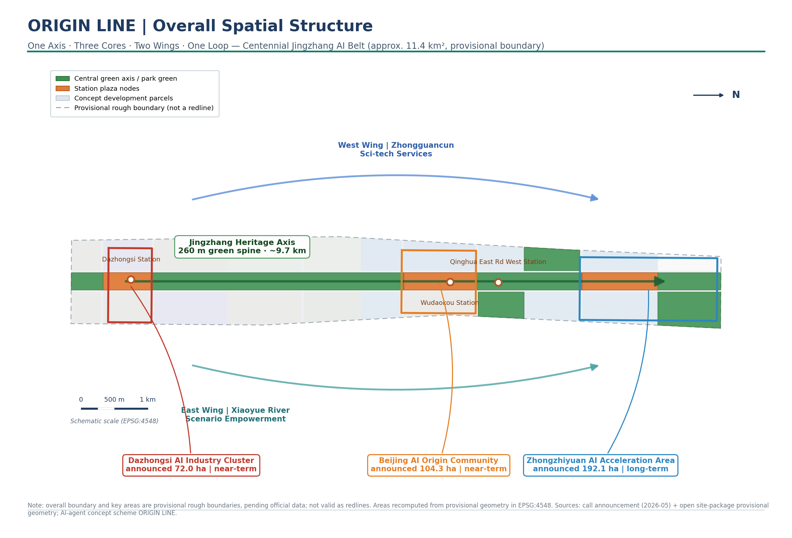
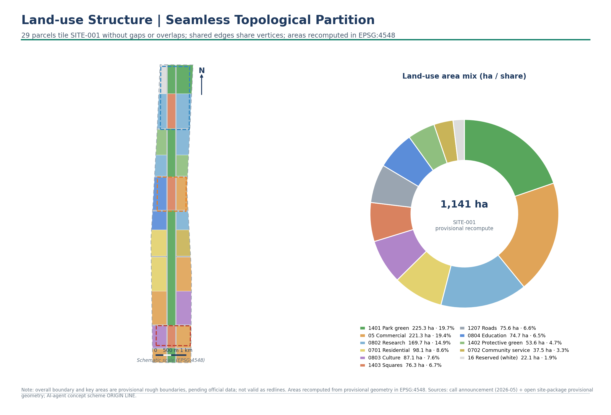
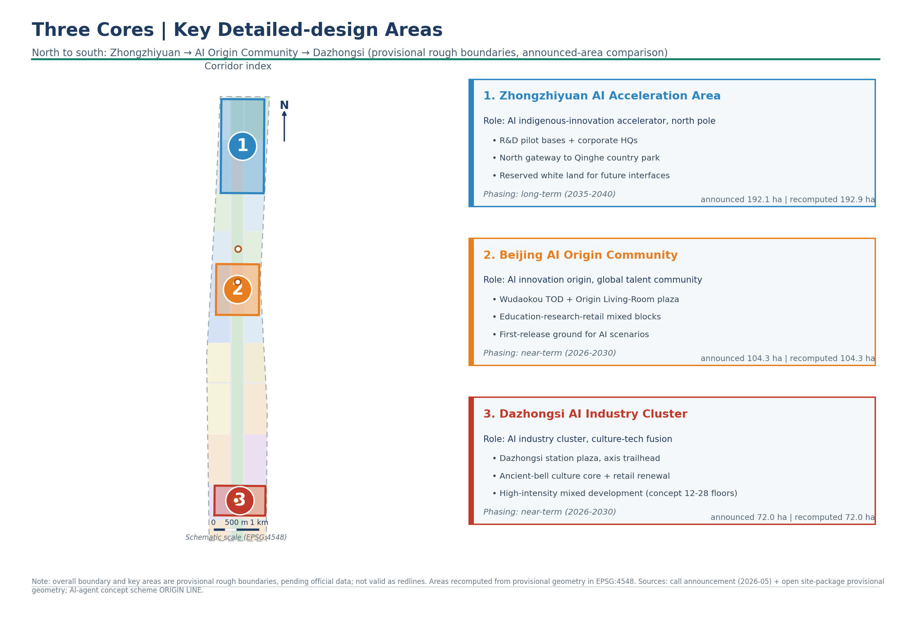
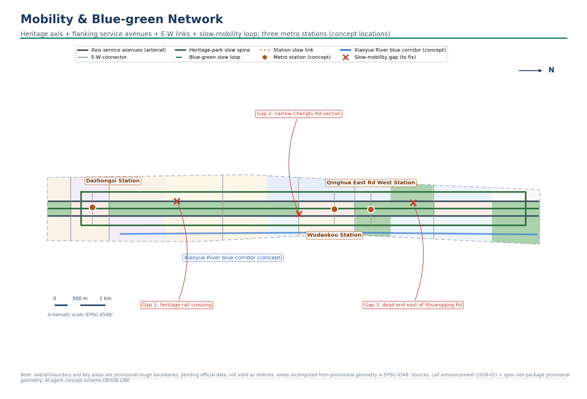
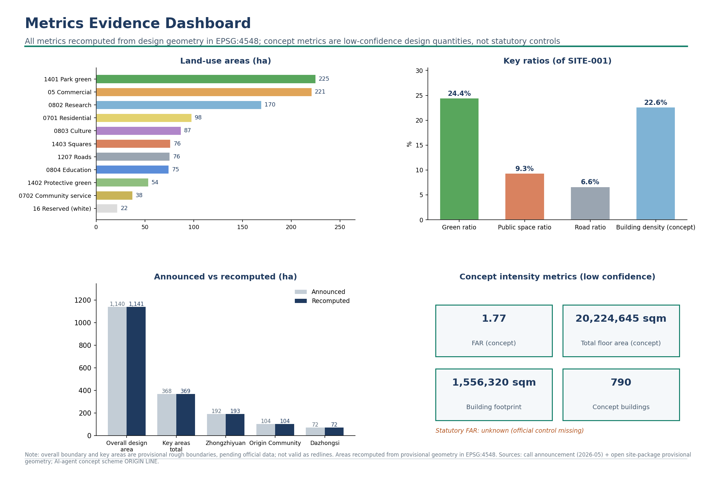

site_area_sqmgreen_ratiopublic_space_ratiobuilding_footprint_area_sqmkey_area_countConcept intensity: FAR (concept) 1.77 · total floor area (concept) 20,224,645 m² · statutory FAR control is missing and recorded as unknown. Concept metrics are low-confidence design quantities, not statutory controls.

Coordinated research area (announced approx. 43.6 km², textual extents) ⊃ overall design area (announced approx. 11.4 km², the design object of this proposal) ⊃ key detailed-design areas (announced approx. 368.4 ha, three sites). The geometry on this page covers only the provisional substitute boundaries of the latter two levels.

The northern innovation pole. Research and pilot-test base plus corporate headquarters clusters, low-intensity development (concept 3–10 storeys); the spine's northern gateway meets the Qinghe country-park segment; the northwest reserved zone (16) keeps a future interface open.
The origin of AI innovation and an international talent community. Wudaokou station-city integration plus the Origin Living Room plaza (1403); an education (0804) – research (0802) – commercial (05) mixed district at medium intensity (concept 6–18 storeys); the first-launch site and open test field for AI scenarios.
AI industry agglomeration with culture-technology fusion. The Dazhongsi station-front plaza is the smart-rail origin (1403); the ancient-bell culture core (0803) plus the commercial renewal belt (05), high-intensity mixed development (concept 12–28 storeys).


790 concept building footprints placed inside buildable parcels (05 / 0701 / 0702 / 0802 / 0803 / 0804), generated on a 16 m inset regular grid; concept storeys run high in the south to low in the north (12–28 south, 6–18 middle, 3–10 north). Conceptual retain-renovate-demolish split: 129 retained · 259 renovated · 402 newly built.
Total footprint 1,556,320 m² · building density (concept) 22.6% · all are conceptual design quantities, not statutory controls.
Low-speed autonomous shuttle loops on both sides of the green spine, linking three stations and three cores.
A full-length digital twin of the Jing-Zhang heritage with AR wayfinding.
The Wudaokou Origin Living Room: first test, first show, first launch for new technology.
Dual energy-carbon control demonstration in the Origin Community with minute-level dispatch.
An ecological sensor network across the green spine and the Xiaoyue River blue corridor.
Research pilot testing, corporate headquarters, and an open data sandbox.

| Task | Coverage |
|---|---|
| Announcement 1.3 heritage activation | The smart-rail spine takes the Jing-Zhang Heritage Park as its backbone, with heritage nodes retained and activated along the full length (digital-twin corridor). |
| Announcement 1.4 mobility and blue-green | Twin service avenues + six east-west connectors + the slow-mobility loop + three station links; the 260 m green axis runs the full corridor with a 24.4% green ratio. |
| Announcement 1.5 AI scenarios | Six scenario cards covering mobility, heritage, first-launch, energy-carbon, ecology, and pilot testing, all located at the three cores and spine nodes. |
| agent.1 – agent.6 | Naming system, ecosystem cases, scenario cards, pilgrimage landmarks, cultural narrative, and long-term operations; see the full report. |
DETERMINISTIC_VALIDATION · PASS SPATIAL_REVIEW · PASS VISUAL_PACKAGING · PASS PROFESSIONAL_EVIDENCE · PASS 3 provisional-class minor notes
The land-use partition passes the no-gap / no-overlap / full-coverage checks; building, green, and public-space layers all sit inside SITE-001; the data-metric values on this page match metrics.json exactly. The proposal was merged into the repository main branch via PR #2049.